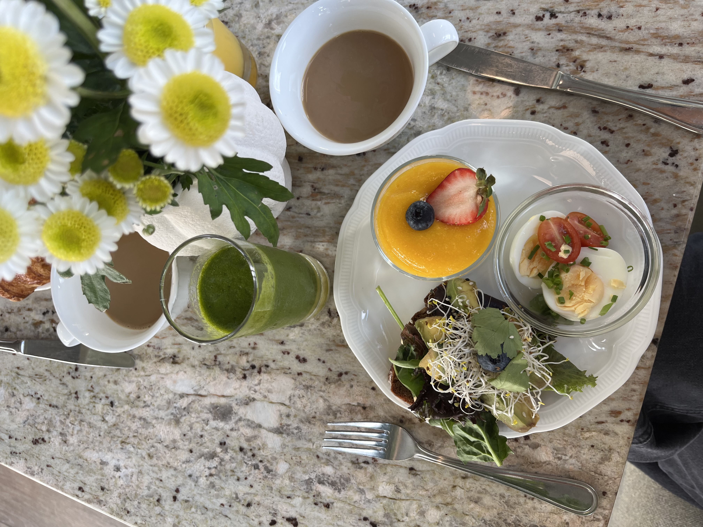

Lär känna Veronica!
Lite kort om mig
Jag heter Veronica, är 22 år gammal och är född och uppvuxen i Täby utanför Stockholm men flyttade till Göteborg för 3 år sen för att få lite miljöombyte.
Jag är en person som gillar att prova på nya saker och skaffar ofta nya intressen, även om jag sällan håller fast vid dem länge.
Jag älskar även att resa och upptäcka nya platser, även om plånboken inte alltid håller med. För mig handlar det om att samla minnen och upplevelser, stora som små, som gör livet lite rikare.


Intressen
- Jag gillar att spendera tid med mina vänner där det är högt i tak.
- Min guilty pleasure är reality-serier. När ena är slut börjar jag genast med en annan.
- Jag älskar att testa ny mat och experimentera i köket med nya recept, oftast blir det i alla fall lite gott.
- En annan guilty pleasure är shopping. Det kan vara allt ifrån kläder till inredning. När pengar spenderas får plånboken lite ångest, men själen känner sig nöjd.